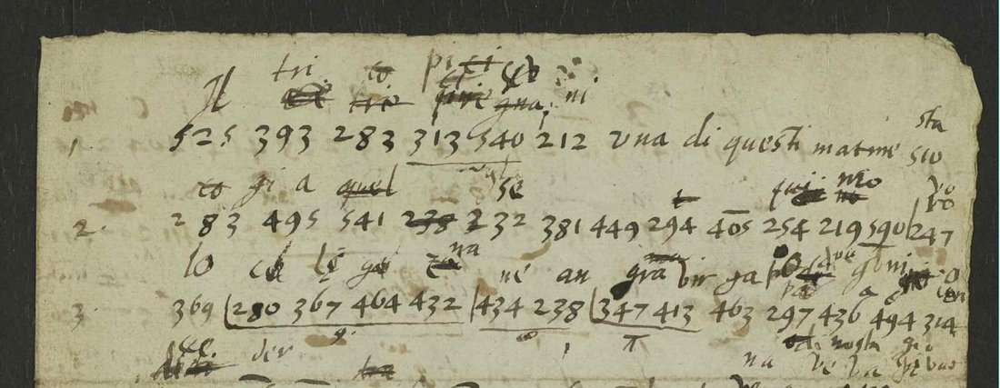

At a glanceNot solved · 420 code groups transcribed, none read through
- The letter
- A Venetian secretary, perhaps in the Low Countries or at Rome, to the Venetian ambassador in England, first half of 1625. The endorsement reads “Cypher of a Venetian Secretary to the Embassador of that nation”.
- Where
- The National Archives, Kew, SP 106/10 ff. 193–195 (DECODE R722), with ten worksheets in the same box (R656, R661, R662, R663, R667, R684, R701, R702, R703, R720), all catalogued as anonymous ciphertexts.
- The cipher
- Three-figure groups 200–599, one per syllable, in runs of five with the vowel in the last digit (366–370 la le li lo lu). The same syllable can have two groups.
- How it was tried
- The codebreaker’s partial key and a few cribs at the edges of the clear passages, then simulated annealing of the rest against an Italian model, in four set-ups.
- Why it resists
- About 70 groups stay free in one letter of 420 groups; every run gives different Italian-sounding nonsense. The codebreaker did not break it either.
- Still open
- The whole code text. Another letter in the same code would be needed.
The letter is part of one English codebreaker’s file of Italian intercepts, which holds several ciphers; each has its own page (a different cipher in each): the “Venetian Cifer” of two earlier letters, built the same way with another table (sp106box10), the two-figure nomenclator of his key sheet R725 (sp106r725), and a letter-and-figure syllabary (sp106r704).
01The letter

525 393 283 313 540 212 una di questi matine; 283 495 541 …; 369 280 367 464 432 …, with the codebreaker’s trial syllables above the groups, many struck out. Image: The National Archives, Kew, SP 106/10 ff. 193–195, image p. 2, via DECODE R722.R722 has 48 numbered lines, written half in clear Italian, half in three-figure groups, with the codebreaker’s trial syllables between the lines. The endorsement reads “Cypher of a Venetian Secretary to the Embassador of that nation in …”, with “1625” on the fold.
The clear passages give its matter: Parmi che …, Io mi credo che questi siano …, Ho visto chiaramente che V. E. …, proposito che ella procurasse, di satisfattione con honor di …, il Spinola sotto Breda, di Bruselles si è inteso …, di Roma, and near the end “… soliti concetti del Pontifice il quale disse a Bethune di voler esser risarcito di 150 m[ila] …”: Philippe de Béthune, the French ambassador in Rome, and the Pope’s demand for compensation over the Valtelline forts. Spinola besieged Breda from August 1624 until 5 June 1625, so the letter is of the first half of 1625.
The whole letter is transcribed: 420 code groups of 117 different values, and the clear Italian between them. DECODE and the earlier notes here had filed R722 with the letter-and-figure intercepts, following DECODE’s pointers; it was first looked at on 21 September 2026.
02The codebreaker’s worksheets on it
Ten more records of the box are the codebreaker’s sheets on this one letter, listed by DECODE as separate anonymous ciphertexts (catalogue items 58, 62 and 66). Their line-numbered fragments stand in R722 verbatim: R703’s l.1 540 212 una che is the end of line 1, R720’s l.2 280 367 464 432 is in line 3, R703’s l.6 340 367 misciendosi and R684’s l.7 … 510 al meno are lines 6 and 8, and R656’s l.12 313 541 377 238 254 is line 12. His line count runs one behind the page’s numbers in places.
- R703 (ff. 184–185): an index headed linea of every group 200–399 with the lines where it stands, notes such as “201 is a finall sillable after an entire word”, and glossed fragments under “Entire wordes assured by reiteration”.
- R667, R684: count grids of every group 200–577 and frequency lists (244 fifteen times).
- R702 p. 1, R663: Italian–English dictionary trawls and syllable drills against numbered lines (
li.25 495 391 540 395 207“a ta n do”). - R661, R656: English drafts in clear (one on Spain’s treasure from the Indies, one a sheriff’s answer to the Exchequer) reused as scrap for fragments by line.
- R662: a torn strip of his English memorandum on how the code is built: “series of sillables beginning …”, “the vowels a.e.i. for every consonant”, “the most frequent … di”.
- R701 p. 3: his partial key, below.
03His partial key, and the cribs
On R701 p. 3 the codebreaker wrote values in runs, the vowel stepping in the last digit:
322–326 pra…pru · 333–336 cha che chi cho · 366–370 la le li lo lu · 375–378 da de di do · 510–514 sta…stu
It is not the table of the “Venetian Cifer” (there 244 is pi, 245 po, 433–437 la…lu), though it is built the same way. His own trial glosses conflict with it in places (244 is glossed ta on R702; 540 both una and n).
The clear text fixes a few values where a code run meets a clear word: line 24 che 525 245 541 449 lo haveva assecurato gives che il Re glie-lo haveva (525 il, 245 re, 541 gli, 449 e); line 8 245 510 Almeno gives resta. Almeno (510 sta); and 334 is che throughout. Where R701 p. 3 can be checked this way it is right.
04What was tried, and why it failed
The remaining groups were annealed against an Italian sixteenth-century five-letter model, allowing at most two groups per syllable and rewarding runs of five like the codebreaker’s. Four set-ups were run (free; normalised for length; R701 values fixed; R701 values fixed with a strong run bonus and no word groups), with 12 to 20 restarts of 400,000 steps each. Every restart ended in different Italian-sounding word salad, and no two agreed beyond the fixed values. With about 70 free groups over 420 tokens, one letter does not determine the code.
05What remains
- The code text of R722: 420 groups, 117 values, deciphered only where a clear word forces a value.
- What would move it: another letter in the same code (the Venetian correspondence of 1625, in Venice or among the Venetian papers at Kew, SP 99), more of the codebreaker’s run sheets among the unimaged SP 106/10 leaves, or a careful pass fixing only values forced at clear-text junctions before annealing again.
- The Venetian calendar (CSP Venice vol. 19, 1625–26) has not been searched for a despatch quoting Béthune’s 150,000 and Spinola before Breda.
06Sources
- The National Archives, Kew, State Papers 106, box 10, ff. 8, 20, 67, 141–143, 164–166, 170–171, 177, 181, 184–185, 188–189, 193–195.
- DECODE (de-crypt.org) records 722, and the worksheets 656, 661, 662, 663, 667, 684, 701, 702, 703, 720. Images are login-only and are not reproduced beyond the detail shown here.
- No earlier decipherment was found; the codebreaker’s own trials stop short of one.
The transcription (r722_groups.txt) and the solver are in targets/sp106r722/. Images from DECODE are not committed.